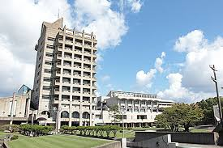

10月11日
（～会場）でパソコン教室を開きました今回は～～などの基本的なことの講義を行いました。
枠つくってたので文章は未定です。
学校のサイトなどを参考にして文章を書く!

地域連携パソコンプロジェクトでは、学生自身が身に着けている能力を他の学生へ伝えるために
毎週題材を決めて、学生自身が講師となり勉強会を行っています。
また、学生が正課で学んだ内容を公民館などで学生が講師として授業を実施し、
世代を超えた方々（年輩者や小中学生）と関わり、
地域に貢献できるよう活動を行っています。
金沢アプリコンテストへ向けてアプリを制作していますーーーー
観光客の皆さんがお店に並んでいるときに時間をつぶせるようなアプリゲームの開発を検討しています。
文章はまだきまってません。
開発チームとコンタクとって書きますよ。
地域連携パソコンプロジェクトでは、学生自身が身に着けている能力を他の学生へ伝えるために
毎週題材を決めて、学生自身が講師となり勉強会を行っています。
また、学生が正課で学んだ内容を公民館などで学生が講師として授業を実施し、
世代を超えた方々（年輩者や小中学生）と関わり、
地域に貢献できるよう活動を行っています！